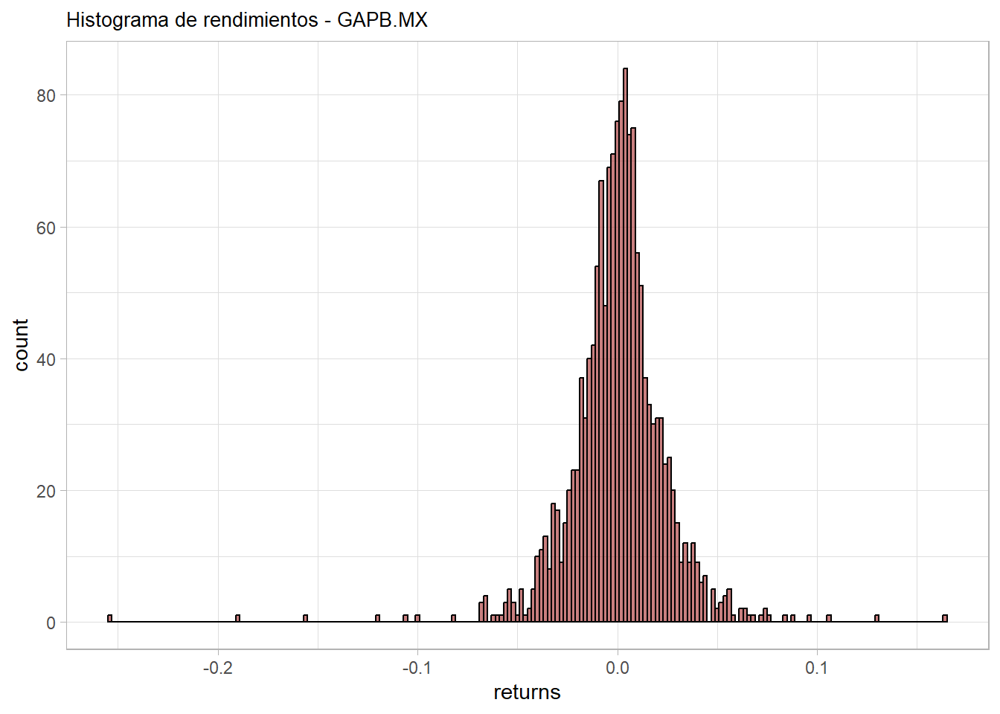
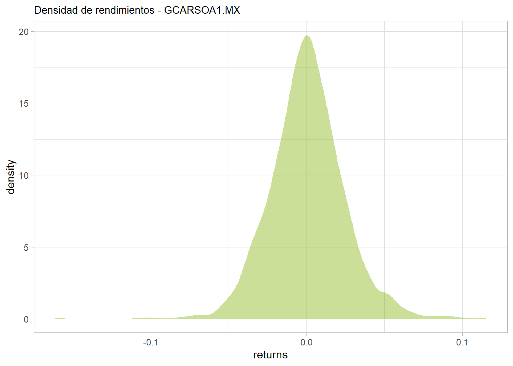
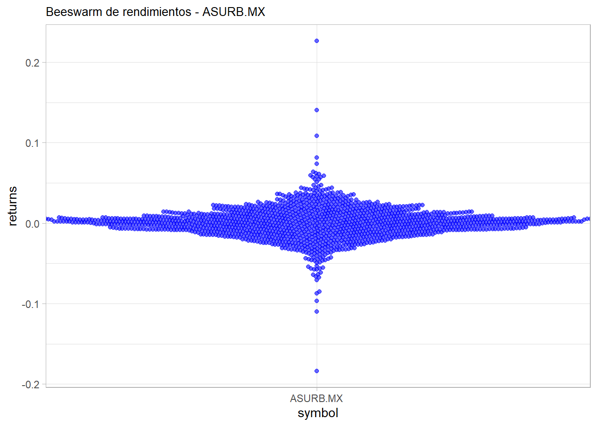
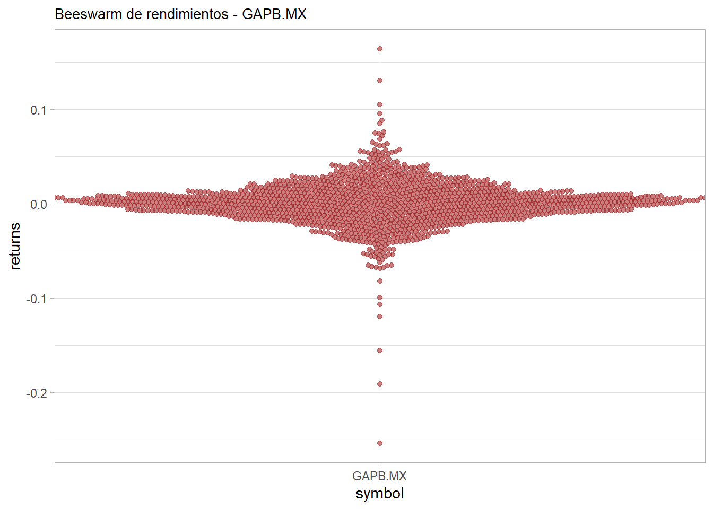
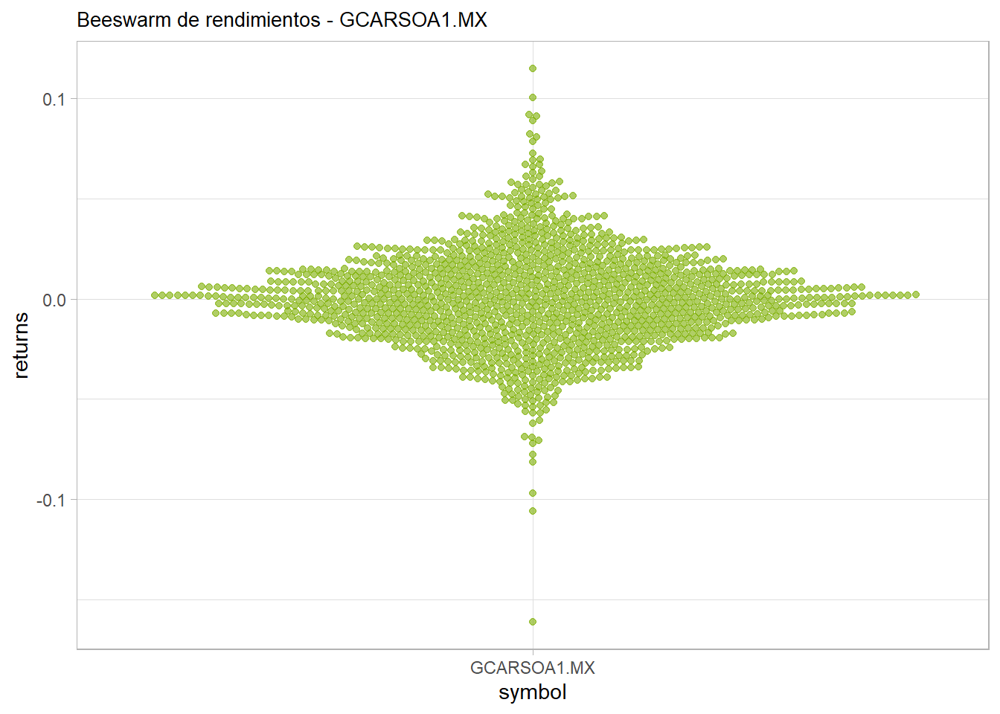
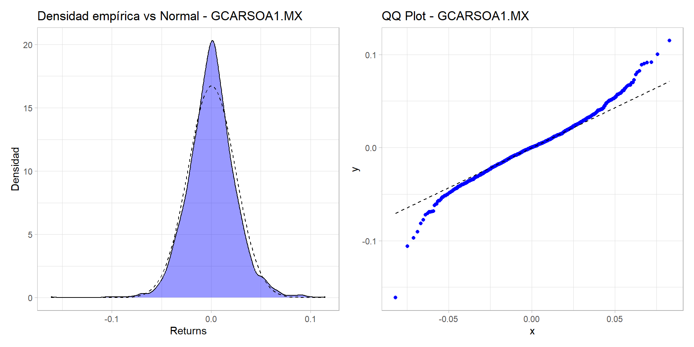
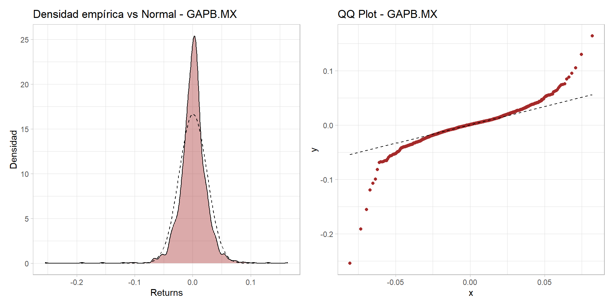
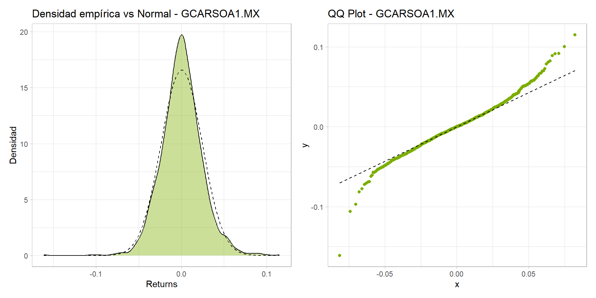
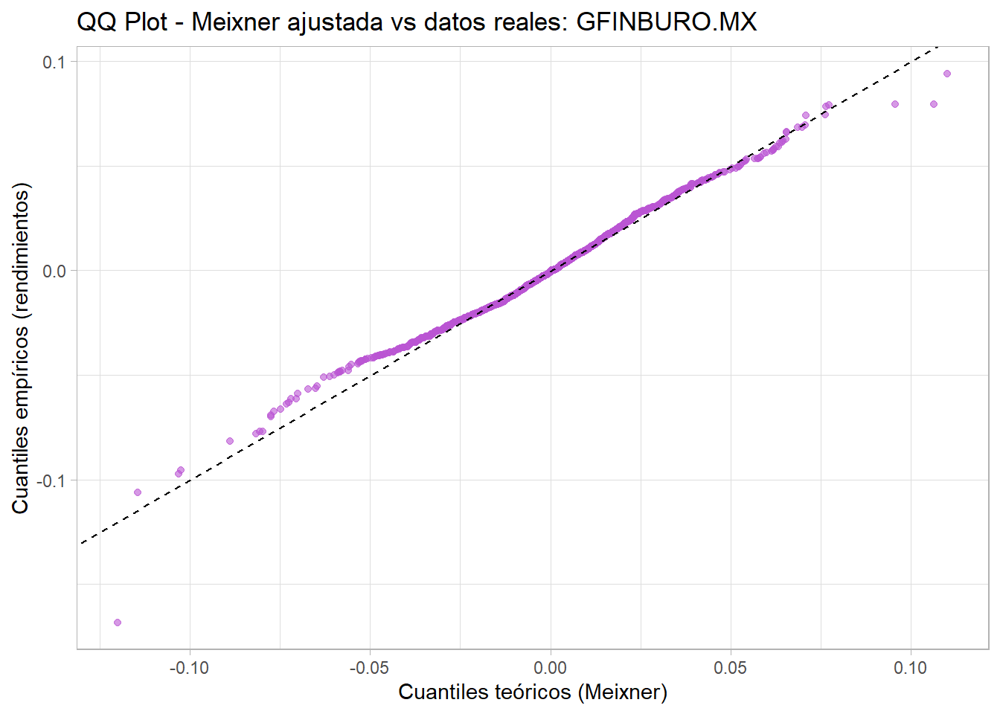

library(ggplot2)
library(dplyr)
library(readr)
library(tidyr)
library(stringr)
library(tidyquant)
library(ggtext)
library(glue)
library(ggrepel)
library(GGally)
library(corrplot)
library(PortfolioAnalytics)
library(quantmod)
library(PerformanceAnalytics)
library(timetk)
library(patchwork)
library(moments)
library(knitr)
library(VarianceGamma)
#install.packages("ggbeeswarm")
library(ggbeeswarm)
library(TTR)Meixner
Ajustes
# Definimos el rango de fechas para la descarga de precios
# primera_fecha: inicio del periodo de análisis
primera_fecha <- '2019-01-01'
# ultima_fecha: fin del periodo de análisis
ultima_fecha <- '2024-12-31'
#tickers <- c("IENOVA.MX", "KIMBERA.MX", "GMEXICOB.MX", "GAPB.MX", "GCARSOA1.MX", "CUERVO.MX", "MEGACPO.MX", "AC.MX", "GRUMAB.MX", "AMXL.MX", "ALSEA.MX", "LABB.MX", "ALPEKA.MX", "FEMSAUBD.MX", "CEMEXCPO.MX", "TLEVISACPO.MX", "PINFRA.MX", "ASURB.MX", "OMAB.MX", "BIMBOA.MX")
# Definimos el conjunto de tickers o símbolos de los activos financieros que vamos a analizar
tickers <- c(
# "^SPX", # Este está comentado, pero sería el índice S&P500
"BOLSAA.MX", # Bolsa Mexicana de Valores
"GFNORTEO.MX", # Grupo Financiero Banorte
"GENTERA.MX", # Gentera
"GFINBURO.MX" # Grupo Financiero Inbursa
)
# Descargamos precios históricos ajustados para cada ticker usando tq_get de tidyquant
descarga_precios <- tickers %>%
tq_get(get = "stock.prices",
from = primera_fecha,
to = ultima_fecha)
# Seleccionamos las columnas relevantes: símbolo, fecha y precio ajustado
# Además, ordenamos por fecha
df_precios_historicos <- descarga_precios %>%
dplyr::select(symbol, date, adjusted) %>%
dplyr::arrange(date)
# Agrupamos los datos por símbolo para operaciones posteriores
descarga_precios <- descarga_precios %>%
group_by(symbol)
head(descarga_precios)# A tibble: 6 × 8
# Groups: symbol [1]
symbol date open high low close volume adjusted
<chr> <date> <dbl> <dbl> <dbl> <dbl> <dbl> <dbl>
1 BOLSAA.MX 2019-01-02 33.5 34.8 33.2 34.4 379836 25.1
2 BOLSAA.MX 2019-01-03 34.4 35.2 33.8 34.8 419250 25.4
3 BOLSAA.MX 2019-01-04 34.8 36.0 34 35.7 640052 26.0
4 BOLSAA.MX 2019-01-07 35.8 36.4 35.2 36.0 474274 26.3
5 BOLSAA.MX 2019-01-08 36.2 37.9 36.0 36.8 383592 26.9
6 BOLSAA.MX 2019-01-09 36.9 37.6 36.7 37.2 1667713 27.2Cálculo de los log-rendimientos diarios
# Calculamos los rendimientos logarítmicos diarios para cada activo
rendimientos_activos <- descarga_precios %>%
tq_transmute(select = adjusted, # Seleccionamos el precio ajustado
mutate_fun = periodReturn, # Función para calcular rendimientos
period = "daily", # Periodicidad diaria
type = "log", # Tipo de rendimiento: logarítmico
col_rename = "returns") # Renombramos la nueva columna como "returns"
# Nombres de los instrumentos
nombres_instrumentos <- rendimientos_activos %>%
dplyr::select(symbol) %>%
unique() %>%
pull(symbol) %>%
sort()
#Paleta de colores
paleta <- c("#F8766D", "#7CAE00", "#00BFC4", "#C77CFF")
head(rendimientos_activos)# A tibble: 6 × 3
# Groups: symbol [1]
symbol date returns
<chr> <date> <dbl>
1 BOLSAA.MX 2019-01-02 0
2 BOLSAA.MX 2019-01-03 0.0136
3 BOLSAA.MX 2019-01-04 0.0235
4 BOLSAA.MX 2019-01-07 0.0103
5 BOLSAA.MX 2019-01-08 0.0222
6 BOLSAA.MX 2019-01-09 0.00945Cálculo de descriptivos: media, mediana, curtosis, skewness, desviación estándar
# Calculamos estadísticos descriptivos de los rendimientos:
# media, mediana, desviación estándar, asimetría, curtosis, mínimo y máximo
tabla_descriptivos <- rendimientos_activos %>%
summarise(media = mean(returns),
mediana = median(returns),
desviacion = sqrt(var(returns)),
asimetria = moments::skewness(returns),
curtosis = moments::kurtosis(returns),
minimo = min(returns),
maximo = max(returns))
head(tabla_descriptivos)# A tibble: 4 × 8
symbol media mediana desviacion asimetria curtosis minimo maximo
<chr> <dbl> <dbl> <dbl> <dbl> <dbl> <dbl> <dbl>
1 BOLSAA.MX 0.000185 0 0.0186 0.447 16.3 -0.125 0.195
2 GENTERA.MX 0.000395 0 0.0271 0.222 10.7 -0.157 0.232
3 GFINBURO.MX 0.000286 0 0.0219 -0.178 6.51 -0.168 0.0941
4 GFNORTEO.MX 0.000447 0.000911 0.0227 -0.387 6.03 -0.144 0.0807Gráfico de densidad, histograma, beeswarm, caja y brazos
# Histograma de rendimientos
for(tick in nombres_instrumentos){
i <- match(tick, nombres_instrumentos)
graf <- rendimientos_activos %>%
filter(symbol == tick) %>%
ggplot(aes(x = returns)) +
geom_histogram(binwidth = 0.002, fill = paleta[i], color = "black", alpha = 0.6) +
ggtitle(paste0("Histograma de rendimientos - ", tick)) +
theme_light() +
theme(plot.title = element_text(size = 10))
print(graf)
}
# Gráfico de densidades
for(tick in nombres_instrumentos){
i <- match(tick, nombres_instrumentos)
graf <- rendimientos_activos %>%
filter(symbol == tick) %>%
ggplot() +
stat_density(aes(x = returns), fill = paleta[i], alpha = 0.4) +
ggtitle(paste0("Densidad de rendimientos - ", tick)) +
theme_light() +
theme(plot.title = element_text(size = 10))
print(graf)
}
# Beeswarm por instrumento
for(tick in nombres_instrumentos){
i <- match(tick, nombres_instrumentos)
graf <- rendimientos_activos %>%
filter(symbol == tick) %>%
ggplot(aes(x = symbol, y = returns)) +
geom_beeswarm(color = paleta[i], alpha = 0.6) +
ggtitle(paste0("Beeswarm de rendimientos - ", tick)) +
theme_light() +
theme(plot.title = element_text(size = 10))
print(graf)
}


# Boxplot de rendimientos
ggplot(rendimientos_activos, aes(x = symbol, y = returns, fill = symbol)) +
geom_boxplot(alpha = 0.6) +
scale_fill_manual(values = paleta) +
theme_light() +
ggtitle("Boxplot de rendimientos por activo") +
theme(plot.title = element_text(size = 12))
Gráfico de velas y algunas métricas/señales de trading
#Gráfico de velas para cada instrumento
for(tick in nombres_instrumentos){
i <- match(tick, nombres_instrumentos)
nombre_grafico <- paste0("velas_", str_sub(tick, start = 1, end = -4))
graf_velas <- descarga_precios %>%
filter(symbol == tick, date >= "2022-01-01") %>% # puedes ajustar la fecha si quieres ver más periodo
mutate(color_vela = ifelse(close >= open, "Alcista", "Bajista")) %>%
ggplot(aes(x = date)) +
# Mechas (de mínimo a máximo)
geom_segment(aes(xend = date, y = low, yend = high, color = color_vela)) +
# Cuerpo de la vela (de apertura a cierre)
geom_segment(aes(xend = date, y = open, yend = close, color = color_vela),
size = 2) +
scale_color_manual(values = c("Alcista" = "forestgreen", "Bajista" = "firebrick")) +
labs(title = paste0("Gráfico de velas - ", tick),
x = "", y = "") +
theme_light() +
theme(plot.title = element_text(size = 10),
axis.text.x = element_text(angle = 65, vjust = 0.5, size = 8),
legend.position = "none")
print(graf_velas)
}Estimación de parámetros Gaussianos: Agregar densidades, qqplot y distribución empírica
# Requiere: library(nortest) ya cargada
for(tick in nombres_instrumentos){
i <- match(tick, nombres_instrumentos)
data_tick <- rendimientos_activos %>% filter(symbol == tick)
returns <- data_tick$returns
# Estimación de parámetros
mu_gorrito <- mean(returns)
sigma_gorrito <- sd(returns)
# Pruebas de normalidad
shapiro <- shapiro.test(returns[1:5000]) # límite por defecto de la prueba
ks <- ks.test(returns, "pnorm", mean = mu_gorrito, sd = sigma_gorrito)
# Imprimir resultados
cat("\n======================================\n")
cat("Ticker:", tick, "\n")
cat("(media estimada):", round(mu_gorrito, 6), "\n")
cat("(desv. estándar estimada):", round(sigma_gorrito, 6), "\n")
cat(">> Shapiro-Wilk p-valor:", round(shapiro$p.value, 5), "\n")
cat(">> Kolmogorov-Smirnov p-valor:", round(ks$p.value, 5), "\n")
# Gráfico de densidad empírica vs normal
graf_densidad <- ggplot(data_tick, aes(x = returns)) +
geom_density(fill = paleta[i], alpha = 0.4) +
stat_function(fun = dnorm, args = list(mean = mu_gorrito, sd = sigma_gorrito),
color = "black", linetype = "dashed") +
labs(title = paste0("Densidad empírica vs Normal - ", tick),
x = "Returns", y = "Densidad") +
theme_light()
# QQ Plot
graf_qq <- ggplot(data_tick, aes(sample = returns)) +
stat_qq(distribution = qnorm, dparams = list(mean = mu_gorrito, sd = sigma_gorrito),
color = paleta[i]) +
stat_qq_line(distribution = qnorm, dparams = list(mean = mu_gorrito, sd = sigma_gorrito),
color = "black", linetype = "dashed") +
labs(title = paste0("QQ Plot - ", tick)) +
theme_light()
# Mostrar lado a lado
print(graf_densidad | graf_qq)
}
======================================
Ticker: BOLSAA.MX
(media estimada): 0.000185
(desv. estándar estimada): 0.018622
>> Shapiro-Wilk p-valor: 0
>> Kolmogorov-Smirnov p-valor: 0 
======================================
Ticker: GENTERA.MX
(media estimada): 0.000395
(desv. estándar estimada): 0.027054
>> Shapiro-Wilk p-valor: 0
>> Kolmogorov-Smirnov p-valor: 1e-05 
======================================
Ticker: GFINBURO.MX
(media estimada): 0.000286
(desv. estándar estimada): 0.021943
>> Shapiro-Wilk p-valor: 0
>> Kolmogorov-Smirnov p-valor: 0.00076 
======================================
Ticker: GFNORTEO.MX
(media estimada): 0.000447
(desv. estándar estimada): 0.022693
>> Shapiro-Wilk p-valor: 0
>> Kolmogorov-Smirnov p-valor: 0.00388 
Pruebita
Este código viene de los documentos en R
# Cargar el paquete Runuran
library(Runuran)
# Definir los parámetros de la distribución de Meixner
alpha <- 0.0298
beta <- 0.1271
delta <- 0.5729
mu <- -0.0011
# Crear el objeto de distribución de Meixner
distr <- udmeixner(alpha = alpha, beta = beta, delta = delta, mu = mu)
# Crear un generador de números aleatorios utilizando el método de inversión
gen <- pinvd.new(distr)
# Generar una muestra de tamaño 100
muestra <- ur(gen, 100)
# Crear una secuencia de valores para evaluar la densidad
x_vals <- seq(-0.2, 0.2, length.out = 500)
# Calcular la densidad para cada valor en x_vals
densidad <- ud(distr, x_vals)
# Graficar la densidad
plot(x_vals, densidad, type = "l", col = "blue",
main = "Densidad de la distribución de Meixner",
xlab = "x", ylab = "Densidad")
Estimación de parámetros Meixner: Agregar densidades, qqplot y distribución empírica
Momentos Empiricos
# Definir el ticker de prueba
accion <- "GFNORTEO.MX"
rendimientos_filtrados <- rendimientos_activos %>%
filter(symbol == accion)
rendimientos <- rendimientos_filtrados$returns
#Momentos empiricos
media_emp <- mean(rendimientos); media_emp [1] 0.0004469815varianza_emp <- var(rendimientos);varianza_emp [1] 0.0005149801asimetria_emp <- moments::skewness(rendimientos); asimetria_emp [1] -0.3865145curtosis_emp <- moments::kurtosis(rendimientos);curtosis_emp[1] 6.031111Función objetivo
La función objetivo que estamos utilizando en la estimación por momentos es la suma de errores cuadráticos entre momentos empíricos y teóricos. Esta elección se basa en una idea sencilla pero poderosa: si queremos que una distribución (en este caso, Meixner) se parezca a nuestros datos, una manera natural es exigir que sus momentos principales —media, varianza, asimetría y curtosis— coincidan con los momentos que calculamos directamente de los datos. Como resolver este sistema de ecuaciones no es posible de forma exacta (por la complejidad no lineal de las expresiones), lo que hacemos es medir qué tan lejos están los momentos teóricos de los empíricos, y tratamos de encontrar los parámetros que minimicen esa diferencia. Usamos la suma de los errores al cuadrado porque penaliza más fuertemente las desviaciones grandes, evita que los errores se cancelen (como ocurriría si usáramos sumas simples), y además tiene propiedades matemáticas útiles: es una función suave, continua y derivable, lo que la hace ideal para métodos numéricos como los que usamos con optim().
# Función de pérdida (suma de errores cuadrados entre momentos teóricos y empíricos)
loss_meixner <- function(par) {
a <- par[1]
b <- par[2]
d <- par[3]
m <- par[4]
# Validación para evitar valores no válidos
if (a <= 0 || d <= 0 || b <= -pi || b >= pi) {return(Inf)}
# Momentos teóricos
mu_teo <- m + a * d * tan(b / 2)
var_teo <- (a^2 * d) / (2 * (cos(b / 2))^2)
skew_teo <- sin(b) / sqrt(d * (cos(b) + 1))
kurt_teo <- 3 + (3 - 2 * (cos(b / 2))^2) / d
momentos_emp <- c(media_emp, varianza_emp, asimetria_emp, curtosis_emp)
momentos_teo <- c(mu_teo, var_teo, skew_teo, kurt_teo)
# Suma de errores al cuadrado
sum((momentos_teo - momentos_emp)^2)
}La función optim() en R es una herramienta general para resolver problemas de minimización numérica. Su sintaxis básica incluye el argumento par, que representa el vector inicial de parámetros desde el cual comienza la búsqueda; fn, que es la función que se desea minimizar; y method, que indica el algoritmo de optimización a utilizar. Entre los métodos más comunes están “BFGS” (rápido, pero no permite restricciones), “Nelder-Mead” (más robusto, aunque más lento), y “L-BFGS-B”, que es el que usamos aquí porque permite establecer límites inferiores y superiores para cada parámetro.
Estos límites se definen mediante los argumentos lower y upper, los cuales son vectores en donde cada entrada representa una restricción para el parámetro correspondiente. En nuestro caso, significa que imponemos que \(a > 0\), \(b > -\pi\), \(d > 0\) , y dejamos \(m\) sin límite inferior. De forma similar: limita razonablemente los valores máximos para ( a ), ( b ) y ( d ), y también deja libre a ( m ). Estas restricciones son esenciales para evitar que optim() explore regiones del espacio paramétrico donde las fórmulas de los momentos no están bien definidas, como por ejemplo al evaluar funciones trigonométricas en zonas donde podrían divergir o no estar definidas numéricamente.
parametros_iniciales <- c(a = 1, b = 0, d = 1, m = 0)
# Llamar a optim
ajuste <- optim(
par = parametros_iniciales, # valores iniciales de los parámetros
fn = loss_meixner, # la función que vamos a minimizar
method = "L-BFGS-B", # metodo con limites
lower = c(0.0001, -pi + 0.01, 0.0001, -Inf), # límites inferiores
upper = c(10, pi - 0.01, 100, Inf) # límites superiores
)
# Ver resultado
print(ajuste$par) a b d m
0.056123646 -0.323418709 0.347018433 0.003665123 Ajuste
a_hat <- ajuste$par[1]
b_hat <- ajuste$par[2]
d_hat <- ajuste$par[3]
m_hat <- ajuste$par[4]
# Crear la distribución Meixner ajustada
distr <- udmeixner(alpha = a_hat, beta = b_hat, delta = d_hat, mu = m_hat)
# Secuencia de valores para evaluar la densidad teórica
x_vals <- seq(min(rendimientos), max(rendimientos), length.out = 1000)
# Calcular la densidad Meixner ajustada en esos puntos
densidad_meixner <- ud(distr, x_vals)
# Crear data frame para graficar
df_densidad <- data.frame(
x = x_vals,
densidad = densidad_meixner
)
# Graficar histograma y densidad empírica vs Meixner
ggplot(data = data.frame(rendimientos), aes(x = rendimientos)) +
geom_histogram(aes(y = ..density..), bins = 150, fill = "orchid", alpha = 0.4, color = "black") +
geom_density(color = "black", linewidth = 0.8,linetype="dashed" ) + # Densidad empírica
geom_line(data = df_densidad, aes(x = x, y = densidad), color = "red", linewidth = 0.9) +
labs(title = paste0("Densidad empírica vs Meixner ajustada - ", accion),
x = "Rendimientos", y = "Densidad") +
theme_light()Warning: The dot-dot notation (`..density..`) was deprecated in ggplot2 3.4.0.
ℹ Please use `after_stat(density)` instead.
set.seed(123) # Para reproducibilidad
muestra_meixner <- ur(pinvd.new(distr), n = length(rendimientos))
# Crear un data frame con cuantiles empíricos y Meixner simulados
qq_data <- data.frame(
x = sort(muestra_meixner), # Cuantiles teóricos (Meixner)
y = sort(rendimientos) # Cuantiles empíricos (datos reales)
)
# Graficar el QQ plot
ggplot(qq_data, aes(x = x, y = y)) +
geom_point(color = "mediumorchid", alpha = 0.6) +
geom_abline(slope = 1, intercept = 0, linetype = "dashed") +
labs(
title = paste0("QQ Plot - Meixner ajustada vs datos reales: ", accion),
x = "Cuantiles teóricos (Meixner)",
y = "Cuantiles empíricos (rendimientos)"
) +
theme_light()